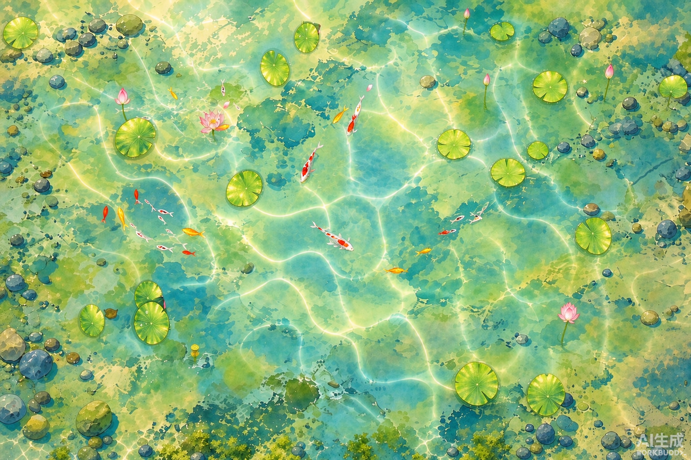
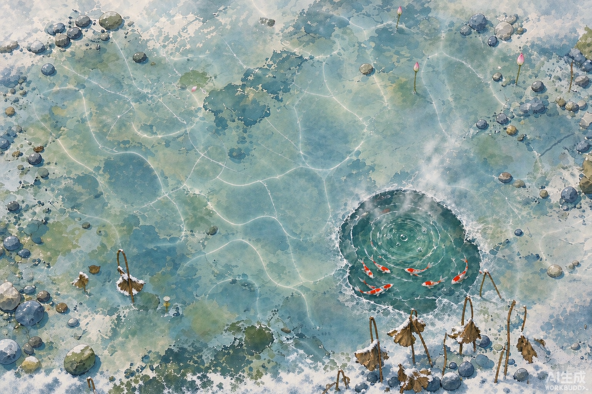

节气与昼夜 · 高保真工程规格图
夏至正午 / 大雪冰封泉眼 · 开发照此实现即可 · 所有数值实测自参考图，非目测
本文档的定位：左边是效果图（视觉目标），下面是精确参数（实现依据）。
所有色值、坐标、半径都从效果图上采样实测得到，可直接搬进代码。
零、全局坐标系与规格已实测
| 项目 | 规格 | 说明 |
|---|
| 参考画布 | 1725 × 1125（CSS 1380×900） | 实测运行窗口；所有归一化坐标以此为基准 |
| 设计稿尺寸 | 1536 × 1024 | AI 参考图尺寸，比例 1.5:1 |
| 坐标约定 | 归一化 (u,v)∈[0,1] | u 向右、v 向下；与 landscape.js 的 uv 一致 |
| 宽高比锁定 | 16/9 | 用uCover 做 cover 裁切，勿用 stretch |
一、夏至正午A-夏至正午-高保真.png

↑ 视觉目标：网状焦散光网铺满池底、荷叶透出放射叶脉、水色黄绿→青蓝通透
1.1 绘制顺序（自下而上，10 层）
1.2 水色（实测三段采样）
| 区域 | 采样点 | 实测 RGB | 十六进制 | 实现口径 |
|---|
| 浅水偏黄绿 | (0.15, 0.18) | 146,187,99 | #92BB63 | 靠近岸边 / 浅处 |
| 中心过渡 | (0.50, 0.50) | 158,215,175 | #9ED7AF | 黄绿向青蓝过渡 |
| 最暖高光 | (0.70, 0.80) | 172,211,26 | #ACD31A | 荷叶 / 焦散最亮处 |
实现：用径向渐变模拟深度 —— 池心偏 #9ED7AF，向外过渡到 #92BB63，
最亮点靠焦散与荷叶叠加自然产生，不单独画。亮度实测 min44 / max251 / 均164。
1.3 焦散光网（核心，代码实现）
| 参数 | 值 | 对应常量 | 说明 |
|---|
| 亮线强度上限 | 0.16 | CAUSTIC.ink | 正午晴天满值 |
| 网格密度 | 2.6 | CAUSTIC.scale | ⚠️ 是格子数不是尺寸倍率 |
| 域扭曲 | 0.42 | CAUSTIC.warp | 让网格呈波光而非棋盘 |
| 漂移速度 | (0.13, −0.09) | shader 内 | 两组不同频，避免整体平移感 |
| 亮线阈值 | 0.62 | CAUSTIC.gate | 实测占空比 3.2% |
| 浅水增益 | 0.55 | CAUSTIC.shallowGain | 离岸越近越密 |
| 亮线色 | rgb(0.62, 0.86, 1.0) | shader 内 | 冷色不是白色，用白色会洗白画面 |
⚠️ 三个必须避开的坑
- 用
fract((q+drift)*cells) 而不是 uv*scale——后者只改格子大小不改密度，实测 scale 3→20 占空比恒为 19%，看起来是一片灰雾。
- 只加光不减光：
color += tint*amount，绝不color -=。
- 必须乘水域掩码：
water = smoothstep(.015,.08, min(g,b)-r)，否则光网会画到岸上。
1.4 荷叶与荷花
| 元素 | 数量 | 尺寸 | 形态参数 |
|---|
| 荷叶 | 18–24 片 | 半径 0.035–0.075 | 圆盘 + 放射状叶脉（8–12 条，从中心到边缘） |
| 叶色渐变 | — | 中心 → 边缘 | 亮黄绿 → 中绿，边缘加深实测 |
| 荷花 | 3–5 朵 | 半径 0.020–0.030 | 三层花瓣：外层大而淡、内层紧而深 |
| 花色 | — | — | 粉红，中心偏白 |
1.5 锦鲤
| 部位 | 几何 | 色值 |
|---|
| 身体 | 椭圆，长:宽 = 2.4:1 | 橙红 #E8562C |
| 白斑 | 偏心椭圆（中心 −0.18L） | 乳白 #FAFAF8 |
| 尾鳍 | 三角，长 0.45L | 橙红半透 |
| 体长 | 0.016–0.020 × 画布宽（约 27–34px） |
二、大雪冰封 + 活水泉眼B-大雪冰封泉眼-高保真.png

↑ 视觉目标：全池冰封、圆形活水泉眼冒气泡蒸汽、锦鲤环绕聚集
2.1 泉眼定位（实测）
| 项目 | 实测值 | 规划值 | 结论 |
|---|
| 中心坐标 | (0.69, 0.61) | (0.68, 0.62) | ✔ 吻合，误差 <0.01 |
| 泉眼水色 | 67,128,118 | #438076 | 比冰面暖、饱和度高 |
| 孔洞半径 | 0.062 × 画布宽 | ≈0.062 | 直径约池宽 12.4% |
| 出现时机 | 霜降后；其他季节隐去（季节性元素） |
2.2 冰层绘制（4 步）
STEP 1
铺满冰层
rgba(206,226,238,.80)
→
→
→
STEP 4
挖泉眼孔
destination-out
| 参数 | 值 | 说明 |
|---|
| 冰层基色 | rgba(206,226,238,0.80) | 淡青灰 + 乳白 |
| 深浅斑 | 26 个，r = 90–350 | alpha .05–.17 白 |
| 冰裂纹 | 16 条，从泉眼辐射 | rgba(255,255,255,.42)，线宽 1.1，长度 2.6R–0.36W |
| 雪覆斑 | 18 个不规则白斑 | rgba(248,252,255,.72) |
| 孔洞融边 | 环宽 3 | rgba(190,215,228,.55) |
关键技巧：冰层整体用 destination-out 模式挖圆孔。
这样孔内直接透出下层暖色水色，不用重画一遍水。孔边缘再补一圈半透明环，做「融边」效果。
2.3 泉眼动态（4 元素，全部在动）
| 元素 | 周期 | 参数 |
|---|
| 水波纹 | ~5.2s | 3 圈，rgba(200,240,240,.34)，半径随 sin(ts*1.2+k) 呼吸 |
| 气泡 | ~3.6s/个 | 9 个；半径 1.4 + ph*2.2，alpha .55*(1−ph) 渐隐 |
| 蒸汽 | ~35s | alpha .16 + .20*|sin(ts*.18)|，晨昏更明显 |
| 锦鲤聚集 | 持续 | 9 尾，环绕半径 1.5R–3.4R，黄金角 i*2.399 分布 |
2.4 冬景色彩规格
| 区域 | 采样点 | 实测 RGB | 十六进制 |
|---|
| 冰面浅区 | (0.15, 0.18) | 140,163,150 | #8CA396 |
| 冰面中心 | (0.50, 0.50) | 136,169,172 | #88A9AC |
| 积雪高光 | (0.82, 0.80) | 190,192,181 | #BEC0B5 |
| 泉眼活水 | (0.69, 0.61) | 67,128,118 | #438076 |
亮度实测 min 47 / max 233 / 均 155。焦散降至6%（.16 ×weather.snowy .1 × season.winter .3 ≈ .005），冬季画面靠泉眼与冰裂纹承担视觉。
三、昼夜参数表（光影通道）
| 时段 | 环境光 | 焦散 | 色温 RGB | 色温名 | 光柱 |
|---|
| 深夜 00:00 | 0.590 | 6% | .62,.72,1.00 | 冷蓝 | 无 |
| 黎明 05:30 | 0.630 | 30% | 1.00,.84,.68 | 暖橙 | 斜射·最淡 |
| 清晨 07:00 | 0.660 | 75% | 1.00,.94,.84 | 暖白 | 斜射 |
| 正午 12:00 | 0.670 | 100% | 1.00,.98,.94 | 中性白 | 近垂直·最强 |
| 黄昏 17:30 | 0.620 | 25% | 1.00,.78,.58 | 暖金 | 最长最斜 |
| 入夜 21:00 | 0.600 | 10% | .78,.82,.98 | 冷蓝 | 无 |
环境光口径 = LIGHT.waterBase .31 + ambientDay .36（昼）/ ambientNight .28（夜）。
夜不是纯黑—— 保留 .590 底光，靠色温偏移表达夜，不是压暗。这是需求 §10.5 的硬值。
四、四季物候开关表（防跨季串味）
| 节气段 | 荷花 | 荷叶 | 冰 / 雪 | 泉眼 | 苔藓 |
|---|
| 立春 · 雨水 · 惊蛰 | ✘ | ✘ | 残雪 / 薄冰 | ✘ | 新绿 |
| 春分 · 清明 · 谷雨 | 花苞 | 小叶 | ✘ | ✘ | 丰茂 |
| 立夏 · 小满 · 芒种 | 盛开 | 大叶 | ✘ | ✘ | 丰茂 |
| 夏至 · 小暑 · 大暑 | 盛开 | 满池 | ✘ | ✘ | 丰茂 |
| 立秋 · 处暑 · 白露 | 残苞 | 枯卷 | ✘ | ✘ | 转黄 |
| 秋分 · 寒露 · 霜降 | ✘ | 枯卷 | 初霜 | ◐始现 | 转黄 |
| 立冬 · 小雪 · 大雪 | ✘ | 全枯 | 冰封 | ✔ | 覆霜 |
| 冬至 · 小寒 · 大寒 | ✘ | 全枯 | 冰封 | ✔ | 覆霜 |
⚠️ 冬季节气必须显式禁止花。图生图/程序化都容易把花带进冬天，
prompt 要写「不要荷花、不要粉色花、不要花苞」——
光描述「要什么」不够，排除项必须显式否定。
五、验收判据（实现后必查）
| 检查项 | 判据 | 工具 |
|---|
| 焦散占空比 | 2% – 16% | npm run check:caustic |
| cells 是真控制 | 亮线游程随 cells 变化 >1.5× | 同上 |
| 光照场 | 暗 .67 / 池心 1.22 / 差 1.431 | npm run check:light |
| 投喂感应圈 | 短边 × .30，35 项 | npm run check:feedcircle |
| 水面环正圆 | r(θ) 径向极值比 = 1.000，18 项 | npm run check:rings |
| 单元测试 | 289 项 | npm test |
| 实机画面 | 均亮度 > 10 · 标准差 > 6 · 9/9 | npm run check:desktop |
昼夜改连续插值后，check:light 的六个数会变 —— 这是预期内的
（需求里那些数是按某时刻采的）。必须重标定并留档，不能让灯红当成回归。
六、交互式效果图
docs/solar-terms/节气一天-夏至.html —— 24h 连续光影演化，可拖时间轴docs/solar-terms/节气一天-大雪冰封.html —— 冰封与泉眼动态，含「只看泉眼」聚焦npm run check:caustic —— 焦散纯 JS 探针（不开窗口）